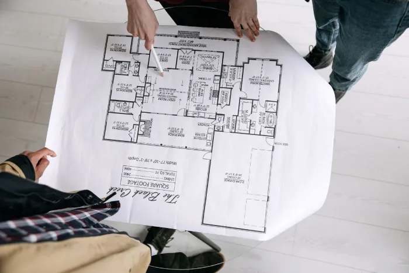
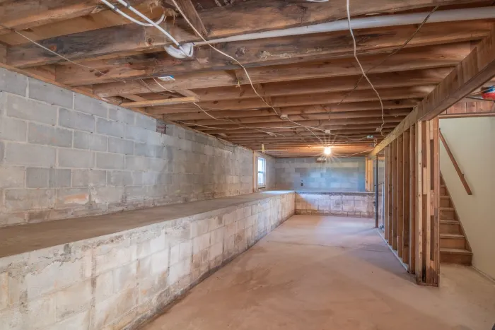
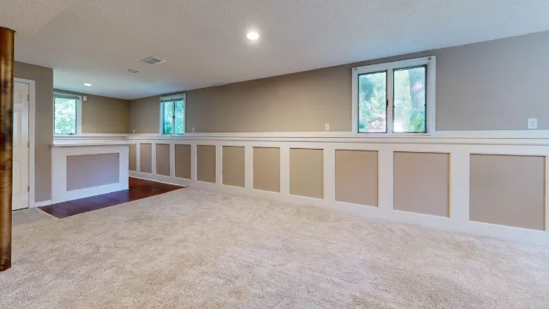
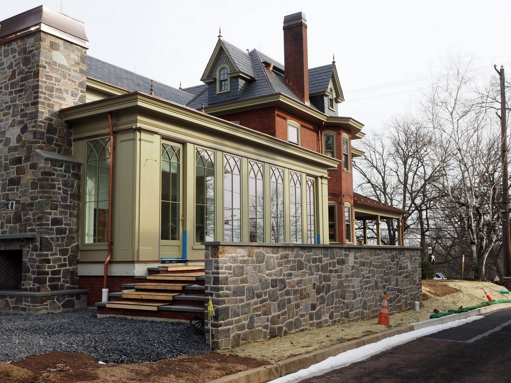
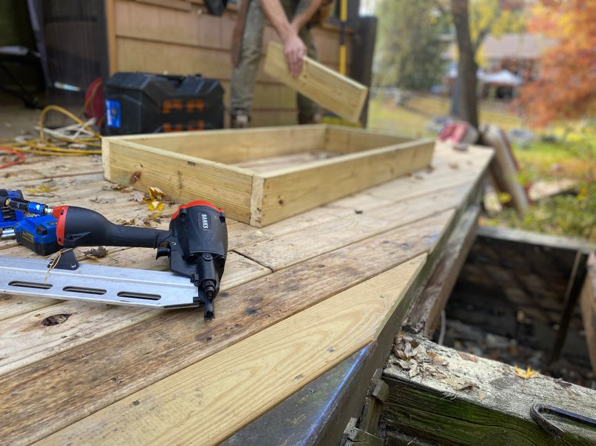
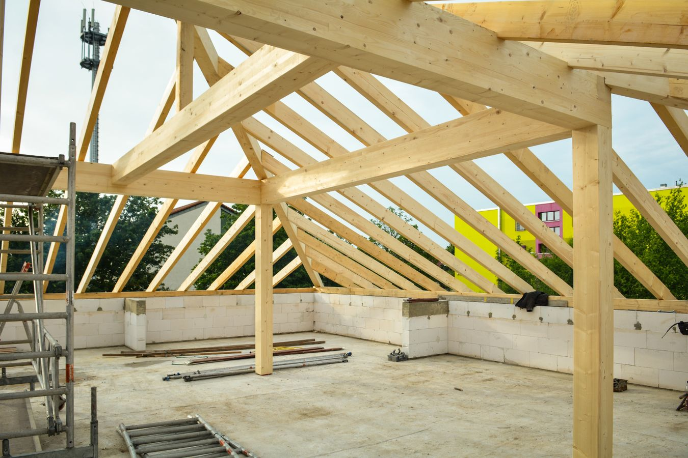
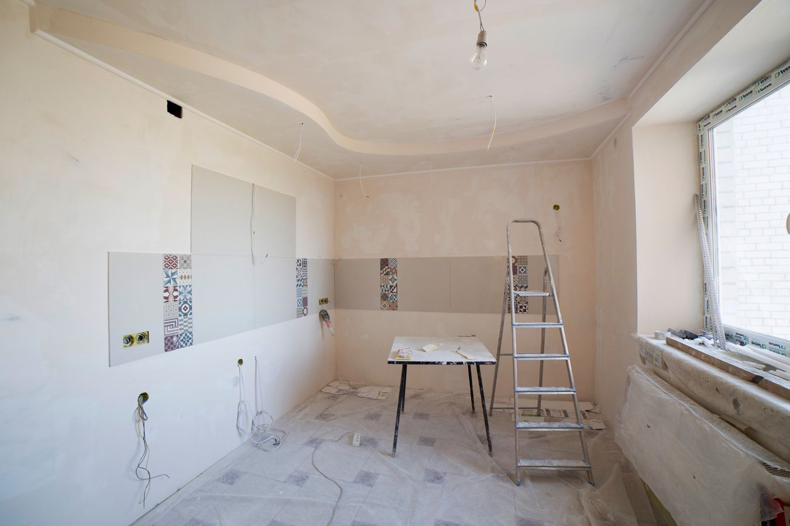
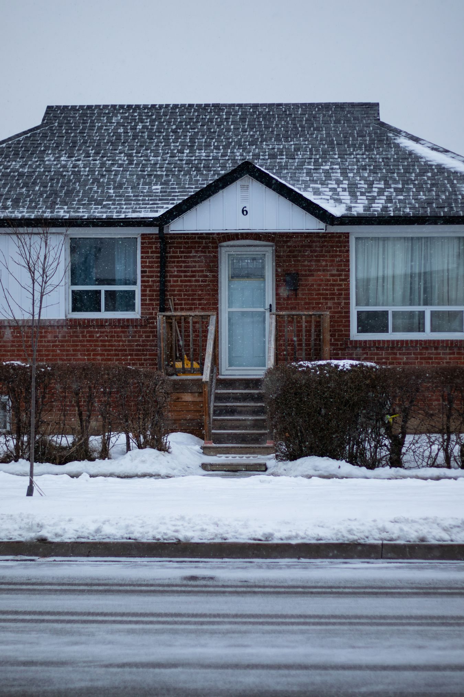

Legal secondary suites
Legal Secondary Suite Guide
Legal Basement Apartments & Secondary Suites in Toronto: The Guide
Our cornerstone guide: what makes a basement apartment legal, what to confirm with Toronto Building, and what to ask contractors.
Read guide
Legal secondary suites
Finished Basement vs. Legal Secondary Suite: What Is the Difference?
They look identical on move-in day. They are not the same project, and the difference is expensive to miss.
Read guide

Permits & code
Basement Renovation Permits in Toronto: What Usually Needs One
What Toronto Building says needs a permit, what usually does not, and who is responsible when something goes wrong.
Read guide
Basement Renovation Cost in Toronto: What Drives the Price
Why one number rarely works, how to compare quotes fairly, and the red flags to walk away from.
Read guide

Underpinning
Basement Underpinning in Toronto: When It Is Needed and What Drives Cost
Lowering a basement floor is structural work. Here is when it comes up and what to measure first.
Read guide

Permits & code
Egress Windows for Toronto Basements: What to Know
Safe exits and daylight for basement bedrooms and suites, and what a window well really involves.
Read guide
Waterproofing
Basement Waterproofing Before You Renovate: Why It Comes First
Finishing over a moisture problem hides it. How to diagnose the cause before you spend on finishes.
Read guide

General renovations
Home Renovation Cost in the GTA: Illustrative 2026 Planning Ranges
General planning ranges by category for whole-home projects. Illustrative only, not quotes.
Read article

General renovations
Renovation Cost by Room: Deck, Attic, Garage, Closet, Bedroom, Basement
Illustrative planning ranges for six commonly asked-about rooms. Not quotes.
Read article

General renovations
Home Addition Cost in the GTA: Illustrative Planning Ranges
Illustrative planning ranges for bump-outs and one- and two-storey additions.
Read article

General renovations
Kitchen Renovation Cost in the GTA: Illustrative 2026 Planning Ranges
Illustrative planning ranges for kitchen work and how to compare quotes.
Read article

General renovations
Best Renovations to Do in Winter in the GTA
Which projects suit the colder months, and which are better left to spring.
Read article